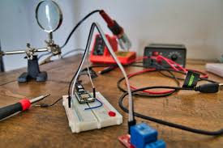

The main objectives of the fifth week of the embedded systems training program were to:
During the fifth week of the embedded systems training program, I delved into advanced concepts in embedded systems design and development. I learned about various advanced communication protocols and interfaces commonly used in embedded systems, such as Bluetooth, Wi-Fi, and Zigbee. I gained hands-on experience with advanced microcontroller programming techniques, including interrupt handling, direct memory access (DMA), and low-power programming.
I also explored the principles of power management in embedded systems, which are crucial for optimizing energy consumption and extending battery life in portable devices. I learned about different power management strategies, such as dynamic voltage and frequency scaling (DVFS) and power gating, and how to implement them in embedded applications.
In addition to theoretical knowledge, I had the opportunity to explore real-world applications of embedded systems in various industries, such as automotive, healthcare, and consumer electronics. I learned about the challenges and considerations involved in designing embedded systems for these applications and gained insights into the latest trends and technologies in the field.
Overall, the fifth week provided valuable insights into advanced topics in embedded systems and equipped me with the skills needed to develop more complex applications. I am excited to continue exploring new concepts and technologies in the coming weeks.
In the next week, I look forward to learning about advanced debugging and testing techniques for embedded systems, as well as exploring the latest trends and technologies in the field of embedded systems development.
Key learning outcomes from Week 5:
Overall, Week 5 was an enriching week of learning and hands-on experience in advanced embedded systems concepts and applications, and I am eager to continue learning and exploring more advanced topics in the weeks ahead.
Next week, I will focus on learning about advanced debugging and testing techniques for embedded systems, as well as exploring the latest trends and technologies in the field of embedded systems development.
